Published by: The LIBER Citizen Science Working Group
Last updated: 2023-05-12
Created: 2022-01-17
Language: English (United Kingdom)
Created by: Editorial Team
About the Book
Library Infrastructures and Citizen Science
Section Editor Kirsty Wallis
v1.0, 2023
Series: Citizen Science for Research Libraries — A Guide
Co-Editors-in-Chief: Thomas Kaarsted & Simon Worthington. Correspondence simon.worthington@tib.eu. Editors: Alisa Martek and Dragana Janković. Reviewers: Dr Raphaëlle Bats, Sara Decoster, Mitja V. Iskrić, Jitka Stilund Hansen, and Dominic Tate. Editorial Committee: Paul Ayris (Chair), Bastian Greshake Tzovaras, Jitka Stilund Hansen, and Kirsty Wallis.
Multi-format production: #NextGenBooks – Open Science Lab, TIB – ADA Publishing Pipeline. CSS template production courtesy Raquel Perez de Eulate, Interpunct Studios – Interpunct.dev. Design based on template design: Geralda van der Es/ SPRESSO.
Print and PDF design template (CC BY-SA). Multi-format template (CC BY-SA). Fonts: CrimsonText and Lato, these fonts are licensed under the SIL Open Font License (OFL). Free and Open Source Software used in production – Fidus Writer (GNU AFFERO GPL), Vivliostyle (GNU AFFERO GPL).
Cover image: European Space Agency (ESA), ASAR global monitoring Mode of the Antarctic. The material is ESA copyright and is supplied to you free of charge on the following terms and conditions. Find out more about Envisat here.
Foreword
Simon Worthington & Thomas Kaarsted, Co-Editors-in-Chief.
Welcome to Library Infrastructures and Citizen Science the second section of the guide series Citizen Science for Research Libraries. The aim of the publication is to inspire researchers and the library community to take a second look at the infrastructures around them and how they can be creatively applied to citizen science projects. Open science has already expanded the array of tools and practices used in research infrastructure. The challenge is how to take these one step further for citizen science, in areas such as — expanding acknowledgement of contributor roles, in collecting data, or providing pathways for the use of open access by the public.
The section editor of Research Infrastructures and Citizen Science, Kirsty Wallis of UCL Library, has brought together voices from across the research infrastructure community to show off existing facilities who are looking to support citizen science, combined with a range of case studies that have implemented citizen science research projects.
The guide series is brought to you by the LIBER Citizen Science Working Group and is part of the groups work to help share knowledge and facilitate academic libraries in their support of scholars managing citizen science research projects. As the maintainer of research infrastructures, like — repositories, persistent identifiers, collections, etc — libraries also help develop and disseminate methods and know-how. To this end the guide is a complement to the other stands of the working groups activities in advocacy, knowledge sharing, and partnerships.
The guide is designed to be a practical toolbox to help run a citizen science project. It has been put together from contributions by members of the research library community. The guide is part of a themed series of four sections — skills, infrastructures, good (open) practice, and programme development — based on the LIBER Open Science Roadmap (LIBER 2018).
Bibliography
LIBER. 2018. “LIBER Open Science Roadmap.” https://doi.org/10.5281/zenodo.1303002.
Introduction: Existing Infrastructures That Can be Used to Support Citizen Science
By Kirsty Wallis (ORCID iD: 0000-0002-9570-6174), UCL Library, University College London.
Members of library services departments interested in implementing citizen science projects or support in their library are often starting from scratch. The other sections of this citizen science guide that cover — skills, practice, and policy — will describe many tools and techniques that can be used to embrace citizen science in your institution, but what about technology and underlying infrastructure? Acquiring new tools can be quite expensive and time-consuming, but engaging with citizen science can begin quite simply, by discovering free tools, joining projects in progress, embracing new ways of using spaces, tools, and processes that an institution already has, or even through simple maker-style projects with very low-cost components.
This infrastructure guide section will focus on new uses for existing tools and infrastructures, and will consider the institutional repository, be it for publications or data, or all of the above. It will look at how research data management and good practice in metadata creation can link to citizen science projects and even consider the impact that institutional or local social media accounts commonly used for engagement can be more widely utilised.
The first part of this section outlines some tools you may already have at your institution, a few best practice ideas and resources, and ways that these tools can be used to support a wide range of citizen science activities. This second part of this section then goes on to outline some case studies of projects that have successfully engaged in very creative citizen science projects involving the standard tools and technologies that many institutions have.
This guide section will help you to:
Understand how you can get started with supporting citizen science in your library using existing infrastructure and tools,
get ideas for innovative ways to use familiar tools,
learn about the breadth of projects possible using simple infrastructure and tools, and
access further resources.
Repositories and CORE: Enabling Open Science Infrastructure for All
CORE and other repositories benefit the citizen science agenda by more than just ensuring the simple availability of content. Repositories carry research literature, but they can also carry data, OER, and dedicated content such as the repository EU-Citizen.Science. Repositories provide data services, promote 'mission-driven' values for public service and public access, and encourage standards compliance — as with 'text & data mining' which is legally protected under UK copyright law, but where many industry players skirt such obligations.
The profiling of CORE is intended to reveal the workings of repositories to give some inspiration for their further support of citizen science and show what there is to build on top of.
CORE(Knoth and Zdrahal 2012)hosts and makes available the world’s largest multidisciplinary collection of open access full-text research papers. The CORE website welcomes more than 30 million unique users every month and caters for the needs of a diverse user community including researchers, students, librarians, software developers, funders and many others from across the globe, making it the most used multidisciplinary aggregator of research papers globally.
CORE, delivered by the Open University with the support of Jisc — a key UK digital infrastructure provider to universities, is a strongly mission-driven not-for-profit endeavour, believing that open science drives forward the sharing of scientific knowledge. This knowledge can be, and should be, used for the public good. Enabling the wider distribution and dissemination of this knowledge greatly increases its potential impact. CORE supports the right of citizens to access the results of research, thus contributing to cultural change by promoting open access and open science.
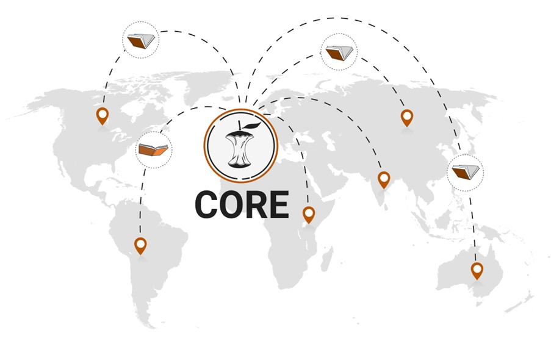
FigureCORE aggregates content from around the world
CORE aggregates open access content, globally, from thousands of institutional and subject repositories as well as journals. Most of all, CORE is uniquely positioned and determined to support the network of (green) open access repositories by (a) increasing the discoverability of their content, (b) by providing innovative technical solutions, including those helping them become more interoperable and (c) by facilitating scalable, cost-effective route for the delivery of open scholarship.
In this way, CORE effectively also supports citizens in discovering the latest scientific research results and increases the visibility of research outputs across scholarly networks. CORE’s services have played an important role in accelerating and supporting the sharing of scientific information, bringing scientific content to every corner of the world and promoting the engagement of researchers from lower and lower-middle income countries.
Everyone can access CORE’s wealth of content via a set of services. Researchers can search for research papers using CORE Search. They can install a free CORE Discovery browser plugin, which with one click, allows researchers to overcome a publisher’s paywall when an open access version of an article is available anywhere across the global network of repositories. Researchers might come across the CORE Recommender, (Knoth et al. 2017) installed in hundreds of repositories including in arxiv.org, and use it to find relevant open access research papers from across the global scholarly network.
CORE has also developed two services specifically designed for research support administrators, the CORE Repository Dashboard(Pontika et al. 2016) and CORE Repository Edition. These help repositories to improve their metadata quality and thus make scholarly content and services more interoperable.
Finally, CORE addresses the burning need for a scalable harmonised machine access to research content, which is something that popular academic search engines, such as Google Scholar do not deliver. More specifically, CORE API and CORE Dataset constitute enabling services for a variety of innovative applications, some of which have been built by third parties. They include but are not limited to the delivery of plagiarism detection software, domain-specific search engines for scientific literature (e.g., in chemistry), funder mandates compliance monitoring, research trends detection and the delivery of personalised assistants for researchers.
Complementing existing capacities and infrastructures on national and regional levels, the EU-Citizen.Science platform initially developed by the EU-Citizen Science Project and now operated by ECSA, provides a rich sets of community assets, including a rich and growing set of training materials, a project catalogue, information about active organizations, and much more. It thereby is a central part of the openly available infrastructure to support citizen science within and beyond the European Union.
CORE currently contains 263M open access articles collected from 11K data providers from 150 countries. CORE provides access to an estimated 140M free to read full text research papers with 34M full texts hosted directly by CORE.
Bibliography
Knoth, P, L Anastasiou, A Charalampous, M Cancellieri, S Pearce, N Pontika, and V Bayer, eds. 2017. Towards Effective Research Recommender Systems for Repositories. https://oro.open.ac.uk/49366/.
Knoth, P, and Z Zdrahal. 2012. “CORE: Three Access Levels to Underpin Open Access.” D-Lib Magazine, 2012. http://oro.open.ac.uk/35755/.
Pontika, N, P Knoth, M Cancellieri, and S Pearce. 2016. “Developing Infrastructure to Support Closer Collaboration of Aggregators with Open Repositories.” LIBER Quarterly, no. 25(4): 172–88. https://doi.org/10.18352/lq.10138.
Citizen Science Project and Data Descriptions
When it comes to the search and discovery of citizen science initiatives and their outcomes, we distinguish between the descriptions of projects (or initiatives) and dataset descriptions.
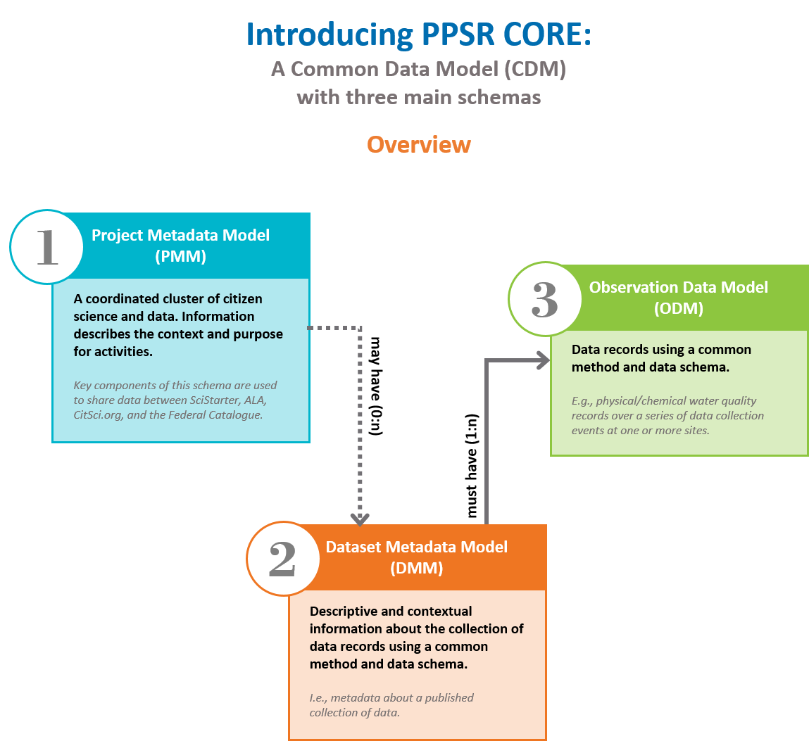
FigureThe Common Data Model (CDM) (Citizen Science Assocaition 2021), which illustrates how information is structured within the citizen science domain
Properly describing a citizen science initiative is important for several reasons. An overall description helps people to get to know the work, to evaluate if the activity might be interesting for them, and to get into contact if interested. Different additional facets might be important for people to understand the context of a given initiative, such as the ways and conditions of participation, information about data management, duration, etc. A clear description of impacts, for example, intended contributions to the Sustainable Development Goals (SDGs), policy goals and social uptake, can help people to understand the overall aim of the activity. One emerging standard to capture required information is Public Participation in Scientific Research (PPSR) Core, which is developed by the International Working Group on Citizen Science Data and Metadata. This standard has, for example, been used in this work of the European Commission Joint Research Centre (JRC). An advisable place to deposit such project descriptions is the European Citizen Science Platform: EU-Citizen.Science.
Describing a citizen science dataset is equally important. Above all, the understanding of the data by the participants, e.g., what is the data set all about, which quality criteria apply, how to contribute data, how can the data set be analyzed, etc. The understanding of the data by others is another important factor, for example, for reuse (if desired) or when legitimizing the recognition of the citizen science data for a particular purpose, such as enrichment of environmental monitoring. It is equally important to raise the visibility and recognition of the work carried out, and being transparent about the outcome of the citizen science activity. Examples of how datasets might be described are to a degree topic specific (especially when it comes to quality criteria). General standards for describing data sets exist, such as the Data Catalogue Vocabulary (DCAT) that is among others used by the JRC Data Catalogue. The US Environmental Protection Agency provides a valuable handbook that can help to develop what is needed in terms of quality assurance. Overall, it is advisable to consider existing data infrastructures for providing access to citizen science data – as, for example, done in projects such as My Ocean Sampling Day (integrating their findings into existing marine data infrastructures) or SamenMeten (extending the existing infrastructure of the Dutch National Institute for Public Health and the Environment on air quality measurements).
See article in this section: 'Measure Together: Infrastructure Combining Environmental Citizen Science and Official Data in the Netherlands', DOI: 10.25815/j4q0-m426.
Bibliography
Adams, Linda D., Daniel Bator, Emily Bender, and Kristen Benedict. 2019. Handbook for Citizen Science Quality Assurance and Documentation. United States Environmental Protection Agency. https://go.usa.gov/xEw43.
Research data management refers to guidelines and best practices that guide researchers through the process of planning a project, undertaking research, publishing their findings, and archiving their outputs. These concepts are intended to help researchers and other scientists successfully run their projects whilst meeting ethical and legal requirements for handling data or evidence, using IT services effectively to prevent data loss and mitigate other risks, and ensure the integrity and transparency of research. Institutions, funding agencies, and publishers all have expectations regarding data management.
Most funding agencies now expect a data management plan (DMP) to be written as part of a project proposal. Funders want to know data will be properly looked after and there will be a maximum return on their investment. Institutions and publishers also have expectations regarding data retention and availability for reproducibility and transparency purposes and that other potential users of the data can reuse and repurpose these to help maximise their research potential. As an example, the Wellcome Trust has a policy covering data, software and other materials with funders more generally requiring DMPs such as Horizon Europe.
Effective data management policy and practice encourages individuals to carry out activities routinely performed as part of a project, but in a more structured and rigorous way. Ideally this good practice needs to be applied before the project has started so that important decisions can be identified and any risks to the project and data or evidence, are sufficiently mitigated. Jisc and The UK Data Archive provide useful guidance on managing projects:
Research data management policy and practice form a part of the much wider issue of open science and scholarship — something that is fostering change across academia. A guide to data and open science is available from UCL.
Infobox: Common Issues
Aims and objectives are unique to each individual research project, so are data management plans — tailoring the plans to suit the needs of specific projects means that plans can end up looking very different from each other. Nonetheless, common issues include:
Backing up data and securing evidence during the lifespan of the project. Guards against data loss and other acts, both inadvertent and malicious.
Assuring data quality and that evidence is gathered consistently; especially if the work is being done by multiple persons.
Complying with data protection legislation when working with living human participants. Bear in mind that you may be subject to international data protection laws collaborating with research teams outside your home country.
Adhering to data sharing agreements and ensuring that all parties involved are satisfied before data or materials are moved from organisation to another.
Ensuring data and metadata are properly archived at the end of a project so that information is not lost.
Choosing an appropriate platform to share data, so others can make use of the data or evidence, findings and other outputs of the research.
Bibliography
Jisc. 2021. “Research Data Management Toolkit.” https://www.jisc.ac.uk/full-guide/rdm-toolkit.
Social Media in Libraries and Their Use in Supporting Research
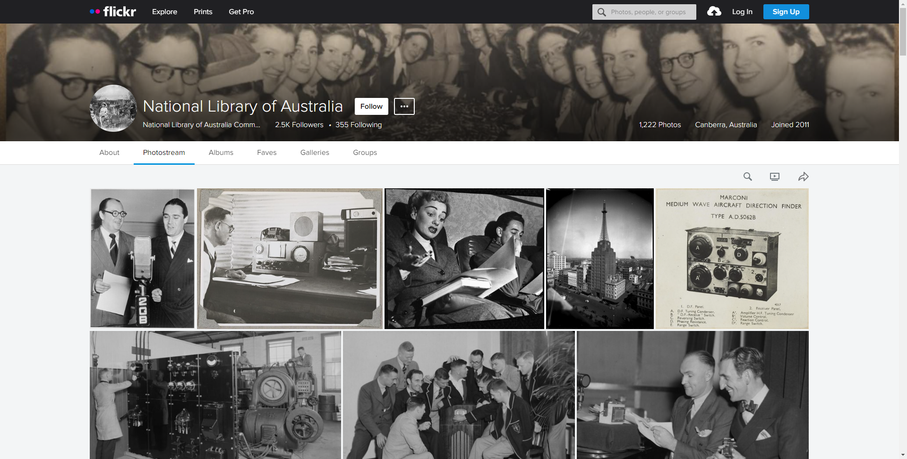
Figure(National Library of Australia Commons 2011)
Dr Grzegorz Gmiterek (ORCID iD: 0000-0002-5692-1824), Faculty of Journalism, Information and Book Studies, University of Warsaw.
Modern libraries — not only academic, but also public libraries — have the infrastructure and the information competencies to be the centre of activities related to citizen science and open science. Libraries are one of the important links in the chain of processing large data resources, which they organize and manage on a daily basis in a professional manner (including through social media). Social media tools provide effective opportunities to share information (metadata) about traditional and digital documents with web users, but often also the content of these documents. This was vividly demonstrated during the pandemic period, when academic libraries had to meet the challenges of providing information and library services via networked tools overnight. The pandemic and the necessary precautions that it brought about made remote services one of the key elements in the functioning of these institutions, and social media (including Facebook in particular) important tools for communicating with users.
Which social media tools do libraries use? The answer to this question is not easy. Libraries should focus on those sites that their users access on a daily basis. With this approach, librarians can be where the users of their services are. This is important because libraries have the opportunity to establish closer contact with both current and potential users. Social media is also a chance to offer them the opportunity to use library resources, digital repositories and libraries, but also collections made available through sites such as YouTube, Flickr, Pinterest, SlideShare, etc. Moreover, these tools can also be useful to find people who would like to engage in collaborative research activities and ventures.
PhotoCelebrating 11 years of The Commons. (Roncero 2019) Operating a hand drill at Vultee-Nashville, woman is working on a "Vengeance" dive bomber, Tennessee (LOC). No known copyright restrictions.
In academic libraries, citizen science can also take the form of crowdsourcing, enabling user participation in tasks or activities or, also based on social media functionality, for example, the collaborative creation of document collections on a social networking site to preserve cultural heritage (e.g., the Australian National Library's 2006-2008 project using Flickr to collect images about Australia) or the collaborative creation and completion of information (including metadata) on documents shared by libraries (e.g., The Commons project on Flickr, initiated by the Library of Congress in 2008). Although undoubtedly, there are many more examples of crowdsourcing in libraries in relation to the construction by users and librarians of thematic, open archives and digital repositories, the creation and correction of databases, the transcription of texts and the processing of scanned documents. In all these endeavours, social media play an important role. If not as a platform for action itself, they are at least a place to inform users about a particular project. What many projects of this type have in common is that libraries play the role of coordinators, organising cooperation between users and employees of these institutions.
Bibliography
National Library of Australia Commons. 2011. “National Library of Australia - Flickr Photo Collection.” https://www.flickr.com/photos/national_library_of_australia_commons/.
Roncero, Leticia. 2019. “Celebrating 11 Years of The Commons.” https://blog.flickr.net/en/2019/01/16/celebrating-the-11th-anniversary-of-flickr-commons/.
Persistent Identifiers and Rich Metadata
Make sure that citizen science data is searchable and discoverable online. Persistent identifiers and rich metadata ensure findability — F in FAIR.
A persistent identifier or PID is a long-lasting reference to a resource and a DOI (Digital Object Identifier) is a PID for publications and datasets. PIDs are machine readable and human readable and unique. A DOI provides the information required to reliably identify, verify and locate data. PIDs are important because they unambiguously identify data and facilitate data citation — the wider infrastructure around DOIs ensure citations tracking.
(Bowser et al. 2020) include the example of The Global Biodiversity Information Facility (GBIF), which:
together with its partners and members, implemented DOI minting and tracking mechanisms to link publications citing data sources with the original source data, which include datasets sourced from citizen science projects.
Datasets without a DOI are much more difficult to track and expose to different types of data services, and in some cases may be excluded from these types of services entirely. DOIs are also vital for reporting on research to funders as they will be used as the primary links to datasets.
When depositing citizen science data in a repository, make sure you select a repository that assigns a DOI (for example Zenodo, where a DOI is assigned to every upload to make it citable and trackable). A DOI is included in the metadata records. For more information, please see the Knowledge Hub on the PID Forum.
The metadata describing data also supports findability, citation and reuse. Rich metadata provides important context for the interpretation of your data and makes it easier for machines to conduct automated analysis. Follow standard metadata schemes, general ones such as Dublin Core, or discipline specific. Consult the DCC Disciplinary Metadata guidance, community-maintained RDA Metadata Directory and a portal of data and metadata standards at FAIRsharing. They provide links to information about different disciplinary and general metadata standards, including profiles, tools to implement the standards and use cases of data repositories currently implementing them.
Infobox: Citizen Science Data Deposits and PPSR-Core
PPSR-Core: A Data Standard for Public Participation in Scientific Research (Citizen Science)
When you select a repository to deposit your citizen science data, make sure that it makes the metadata describing your dataset available in a format readable by machines and humans. Aim for comprehensive data descriptions with metadata, using a recognized formal machine-readable metadata schema. [See #CS4RL Section #1: FAIR(Bowser et al. 2020) stresses that:
...when datasets are not adequately described with relevant metadata, their potential for secondary uses is significantly compromised, frequently resulting in whole datasets being discounted as untrustworthy and reinforcing the perceptions of poor rigor in citizen science. Addressing this perception is critically important for citizen science–generated data to gain more trust within the research sector.
For example, Citsci.org is a citizen science platform that follows metadata standards for quality assurance and interoperability, and the PPSR Core is a set of global, transdisciplinary data and metadata standards for citizen science. Within the PPSR-Core model, existing data and metadata standards and ontologies can be unified.
Infobox: Bowser et al. (2020) provides the following recommendations
Data infrastructure: Citizen science practitioners should consider leveraging existing infrastructures across the data lifecycle, such as for data collection and data archiving, e.g., in large and stable data aggregation repositories.
Data documentation: Citizen science practitioners should make discovery metadata (structured descriptive information about data sets) available through data catalogues, and should share information on methods used to develop data sets on project websites. Researchers seeking to advance the field could develop controlled vocabularies for metadata documentation, particularly to enable fitness for purpose assessments.
Bibliography
Bowser, Anne, Caren Cooper, Alex de Sherberinin, Andrea Wiggins, Peter Brenton, Tyng-Ruey Chuang, Elaine Faustman, Mordechai (Muki) Haklay, and Metis Meloche. 2020. “Still in Need of Norms: The State of the Data in Citizen Science.” Citizen Science: Theory and Practice, no. 5(1) (September): 18.
Case Studies Introduction – Citizen Science and Infrastructures in Practice
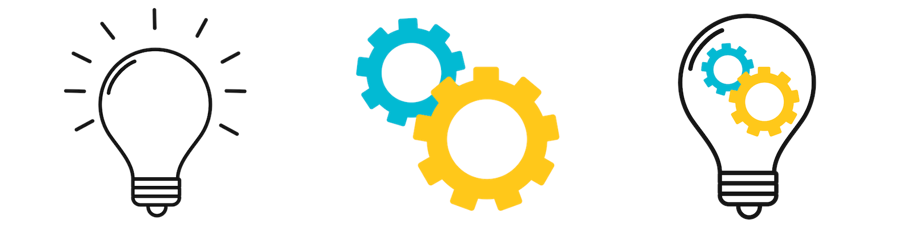
By Kirsty Wallis (ORCID iD: 0000-0002-9570-6174), UCL Library, University College London.
This latter part of this guide section is a collection of case studies that use the tools and infrastructures discussed in the first half of the section. These case studies have been selected to showcase projects that use tools that most institutions have, can get easily for very low cost, or that use widely available free tools such as some commonly in use at academic institutions, such as GitHub and various social media platforms.
These case studies show that simple tools, plus a bit of inventive thinking, can be used to create new and exciting projects. This short section is just the start, aiming to seed ideas and get you thinking about opportunities to develop projects from within your own institutions, or ideas you might be able to learn from. This section however is just the beginning, keep these examples in mind as you read through the rest of the book as there are more examples to be found throughout. These case studies also serve to show the importance of establishing infrastructure use early in a project, and how these central resources can be a jumping off point for the library's involvement in Citizen Science projects.
Making a Custom Citizen Science Reader
An activity module intended for inclusion in citizen science projects. This is an activity that researchers can plan into their citizen science project to create a bespoke reader with project participants and to introduce participants to using scientific literature, open access, and discovery services.
The activity module is designed to enable a hands-on activity by members of the public for the easy use of modern open access infrastructures involving finding, using, and sharing scientific literature. semanticClimate has developed open-source software to search across multiple research literature repositories such as Europe PMC or bioRxiv (pronounced "bio-archive") enabling the creation of an automated literature survey within minutes — presenting the user with a summary of findings and allowing the download of the full-text open access articles.
semanticClimate is an example of an open search framework based on text data mining (TDM). Having 'open search' systems is important as search engines are the gateway to scientific knowledge. Search engines can be gamed to bias certain outcomes or be based on faulty algorithms (Kraker 2018). semanticClimate is built using open science methods, with all parts of the system being open and verifiable.
Who is the activity module for?
The module is for researchers using citizen science in their research project to add a module to engage the participants in conversations about formulating research questions and consulting on what is known about a topic in the existing scientific literature corpus.
The activity can be used to share results on a public webpage and to update the search as often as is required — say once a week.
Infobox: About semanticClimate open-source software
semanticClimate is a project that aims to develop knowledge resources and tools to help tackle the research questions on a global scale – climate change, viral epidemics, etc.
As an example, despite over $100 Billion being spent on medical research by NIH (2010-2014) (Galkina Cleary et al. 2018), much knowledge is behind publisher paywalls. Moreover, it is usually badly published — using PDFs which are not interoperable in format, or dispersed without coherent knowledge tools. This particularly disadvantages the Global South. The project aims to use modern tools, especially Wikidata (and Wikipedia), text mining, with semantic tools to create a modern integrated resource of all current published information on climate change for example the IPCC Reports. It relies on collaboration and gifts of labour and knowledge — to find out more see the Getting Started Guide or the How Can I Help section.
semanticClimate practices Open Notebook Science(“Open-Notebook Science” 2008) which means there is no insider knowledge and all work is open and licenced for the freedom of reuse.
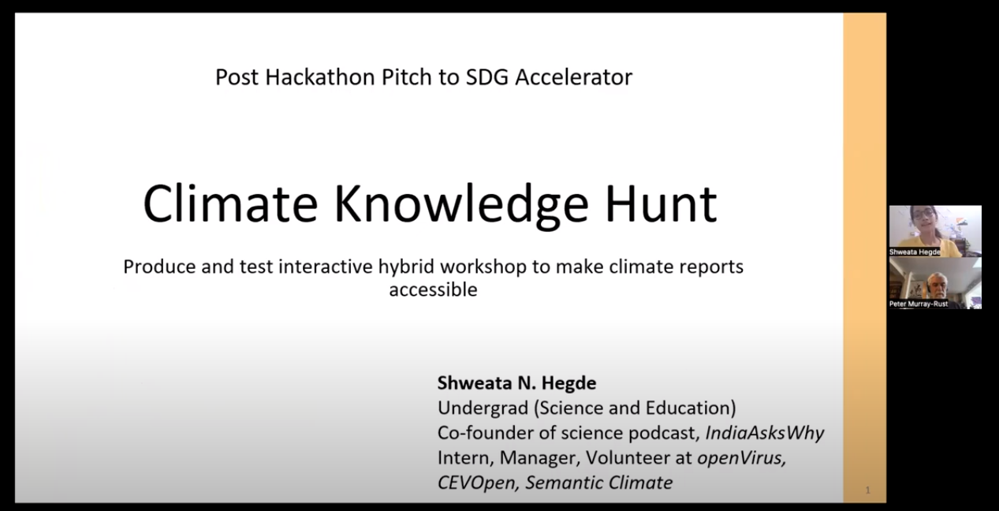
FigureClimate Knowledge Hunt video. The video explains how semanticClimate tools can be used for searching IPCC reports
How semanticClimate works for citizen scientists
Below is an example of how semanticClimate can be used. The process is carried out as a group, either in person, hybrid, or online. Each step can be coached and explained to the participants. The final outcome of the process is a collection or papers, which itself can be made public for other, and the learning experience for the participants.
In this example, a citizen science project is looking at the topic of 'zero-carbon plans' for use in regional environment and climate policies.
semanticClimate carries out two types of search:
Firstly, it searches repositories on the net and retrieves the papers;
Secondly, it then analyses the local full text copies of the papers that have been downloaded. The result is a swift and verifiable literature survey that might have once taken days, weeks, or months to complete if done manually.
The researcher (or citizen) formulates a question they are interested in, e.g.,
What ‘zero-carbon’ plans for tackling the problem of climate change are reliable enough for further adoption in cities or regions around the world, for example in: green energy, transport, and housing plans For example the EU's 'A European Green Deal' (“A European Green Deal” 2020) or IPCC Climate Mitigation Reports(IPCC 2022)?'
Or, a simpler version of the same question could be,
What zero-carbon plans can be used for the future of my local schools, city public transport, or municipal buildings, etc?
From the 'research questions' a dictionary of terms important to the topic need to be made. Ten dictionary terms is a good start. Our example dictionary terms for 'zero-carbon' plans would be:
rapid decarbonisation; zero-carbon; low-carbon; energy planning; decarbonisation; low energy transport; policy and planning; policy; low energy housing; low energy city planning; low energy schools.
These terms are then input into semanticClimate and the browser, and it goes off and downloads the top one hundred research papers from your repository of choice — we use Europe PubMed Central as the default as it aggregates many other sources, but many other literature repositories could be used. Wikidata can also be used in relation to the dictionary terms being used and this allows for more advanced semantic queries to be carried out as well as being able to retrieve multilingual Wikipedia pages of say English terms used in papers.
semanticClimate then does a local search on the one hundred downloaded papers after giving the papers a scan. The local searches can be focused on paper sections — introductions, findings, etc., or on content types illustrations or tables — informed by what is thought to be the most yielding in the papers.
The next step is to refine and repeat depending on what looks useful. The dictionary of initial search terms should be updated as well as reviewing the local full-text search. semanticClimate downloads the full-text of the papers, as well as PDF copies. It also makes a summary of the results of the frequency of the terms. The final number of papers can be narrowed down to a workable sized reader.
The whole search results package can then be published and shared online as a literature collection on the given topic.
Bibliography
“A European Green Deal.” 2020. https://commission.europa.eu/strategy-and-policy/priorities-2019-2024/european-green-deal_en.
Galkina Cleary, Ekaterina, Jennifer M Beierlein, Navleen Surjit Khanuja, and Fred D Ledley. 2018. “Contribution of NIH Funding to New Drug Approvals 2010–2016.” PNAS. https://doi.org/10.1073/pnas.1715368115.
IPCC. 2022. “Climate Change 2022: Mitigation of Climate Change.” https://www.ipcc.ch/report/ar6/wg3/.
Kraker, Peter. 2018. “Illuminating Dark Knowledge.” https://doi.org/10.25815/FN1Q-KC98.
“Open-Notebook Science.” 2008. In Wikipedia. https://en.wikipedia.org/wiki/Talk:Open-notebook_science.
Measure Together: Infrastructure Combining Environmental Citizen Science and Official Data in the Netherlands
Technological development of low-cost sensors has given a tremendous boost to citizen science in the field of environmental monitoring of, e.g., air quality or noise. A fascinating mix of socio-technical issues emerge, encompassing: the quality of the data, the development of a citizen science community. The Measure Together infrastructure of the Dutch National Institute of public Health and Environment (RIVM) addresses these various issues by building a unique citizen science infrastructure that also includes official measurements.
By H. Volten (ORCID iD: 0000-0001-5613-4030), R. Stelwagen, D. Drukker, H. de Ruiter (ORCID iD: 0000-0001-7352-9317), E. Tenner, A.F.M.M. Souren (ORCID iD: 0000-0001-9524-7222). Dutch National Institute for Public Health and the Environment (RIVM).
Imagine you are a local government and you want people to exercise more; what do you do? Perhaps you decide to give away a hundred bikes to eager citizens. At the kick-off event, the mayor cycles around the block, his picture is all over the media; everybody is enthusiastic. A year later the hundred bikes are in the shed, unused. Turns out there is no suitable space to cycle. What should have been done is providing cycling lanes, parking, direction signage, i.e., build an infrastructure; “if you build it, they will come”.
To stimulate citizen science (CS) in the field of environmental measurements the situation is similar. You could supply people with sensor kits. But providing an infrastructure is more fruitful. Measure Together ('Samen Meten’ in Dutch) is a CS infrastructure provided by the Dutch National Institute of Public Health and the Environment (RIVM) to support citizen scientists who want to conduct environmental measurements. The aim of the open science infrastructure is to add value to the citizen science data by using it complementary to the official data. This is a challenge; it asks for a rare openness and trust between stakeholders with seemingly conflicting interests.
In this chapter we describe the infrastructure. We illustrate how it serves researchers, policy makers and, most importantly, citizens.
Measure together — a win-win
One of the main reasons citizen scientists and (local) governments turn to Measure Together for guidance and support, is that they want to perform the best possible measurements to maximize impact. RIVM can assess and occasionally improve the quality of the data and thereby increase its scientific credibility, reliability and usability [(Wesseling et al. 2019)(Hecker 2018). By adding this value to the data, Measure Together makes it easier for (local) governments and policy makers to take the data seriously and join the citizens in their efforts. RIVM also benefits by using the CS data to complement official measurements, enabling more detailed maps and modelling. In addition, supporting citizen science raises awareness and trust, enables an improved dialogue between stakeholders and contributes to democratising science.
An illustration of mutual benefit, is the collaboration between Measure Together and Sensor.Community, the largest worldwide bottom-up CS infrastructure, active in 70 countries. Measure Together efficiently profits from Dutch Sensor.Community data. In turn, Sensor.Community data in the Netherlands increased in impact. As a result, both infrastructures grow fast.
Growing a community
Measure Together has grown fast. The data portal started in 2016 with 70 air-quality sensor kits and now hosts more than 3000 sensor kits (figure 1). The infrastructure was built step by step, by asking feedback from citizen scientists and by joining CS projects to learn from practice. This process is ongoing.
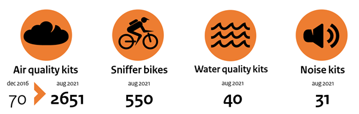
FigureGraphic overview of the growth of the Measure Together community from December 2016 to August 2021.
Building blocks of the infrastructure
The main aspects of the Measure Together infrastructure are described below (figure 2).
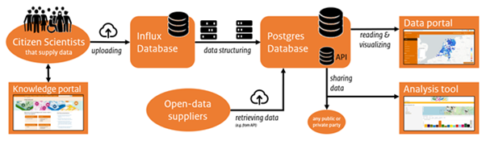
FigureDiagram of the Measure Together infrastructure.
Knowledge portal — exchange of information
The knowledge portal focuses on the exchange of information. It offers an overview of sensors, devices, and software. CS projects are invited to write a project-page making the platform a meeting point for citizen scientists. Other ways to connect people are (online) CS meet-ups, social media (“Twitter: Measure Together (@samenmeten)” n.d.)(“YouTube Channel Measure Together” n.d.), a discourse Forum, and a quarterly newsletter.
Influx database
Citizen scientists may upload their sensor data to an Influx database using Internet of Things (IoT) techniques, such as Wi-Fi, LoRa, and Narrowband (NB-IoT). The data use a standard terminology for the measured components. The open-source Influx database is flexible and especially useful for third-party data suppliers. It passes data on to the Postgres database.
Postgres database
The Postgres database ultimately contains all data. It is an (open-source) relational database. It contains raw data, processed data (e.g., hourly averages ) and metadata, such as what sensors and algorithms to calibrate and post-process the data are used – there are no “black boxes”. The Postgres database also receives data through querying application-programming interfaces (APIs) from other projects. The major source of data is Sensor.Community.
Data portal – visualization and combination of data
The data portal shows the hourly averages from the Postgres database as coloured dots on the map (figure 3). To provide a level of privacy, the sensor-locations are randomly shifted by up to fifty meters every time. Data are shown for quantities such as noise levels (Leq), electric conductivity of water (EC), particulate matter (PM10, PM2.5), or nitrogen dioxide. New quantities can be added easily. When clicking on a dot, the underlying data are shown as a time series plot. The portal visualizes both official and citizen science data. Citizen scientists may compare their data with other sensor or official data.
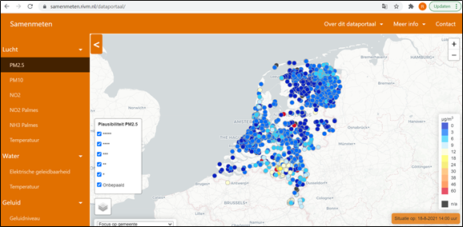
FigureThe data portal of Measure Together (Dutch: Samen Meten)
Measure Together makes it easier for people to do environmental CS. As a result, the number of citizen scientists using the infrastructure is booming. Projects pop up initiated by citizens, local governments, academic scientists, and often a combination of stakeholders working together, generating beautiful societal and/or environmental impact (Hecker 2018)(“Measure Together Project Overview” n.d.).
Since official environmental data in Europe is open, just like most citizen science data, similar infrastructures to combine the data could and will be made in other countries as well. We hope that Measure Together may provide inspiration.
Hecker, Susanne. 2018. “Enhancing National Environmental Monitoring through Local Citizen Science.” In Citizen Science: Innovation in Open Science, Society and Policy, 337–52. UCL Press. https://doi.org/10.14324/111.9781787352339.
“Measure Together Project Overview.” n.d. Accessed March 9, 2023. https://samenmetenaanluchtkwaliteit.nl/international/projects.
“Twitter: Measure Together (@samenmeten).” n.d. Accessed March 9, 2023. https://twitter.com/samenmeten.
Wesseling, Joost, Henri di Ruiter, Christa Blokhuis, Derko Drukker, Ernie Weijers, Hester Volten, Jan Vonk, et al. 2019. “Development and Implementation of a Platform for Public Information on Air Quality, Sensor Measurements, and Citizen Science.” Atmosphere, no. 10(8) (June): 445. https://doi.org/10.3390/atmos10080445.
“YouTube Channel Measure Together.” n.d. Accessed March 9, 2023. https://www.youtube.com/channel/UCTIl3jfVTXxwmBrJvHh5FkQ.
Software plays an important role in many citizen science projects with large numbers of hobbyists using a wide variety of micro-computers and consumer devices. Citing the research software used and code contributions made by citizen participants can be recorded using Citation File Format (CFF) with DOIs across connected open infrastructures, such as: Zenodo, Zotero, and GitHub. Acknowledging citizen contributions to code is an important incentive to encourage self-directed learning.
‘Software is as integral as a research paper, monograph, or dataset in terms of facilitating the full understanding and dissemination of research.’ (S Katz et al. 2021)
Open science has advanced the understanding that the types of research objects to be cited have to expand outside of the narrow confines of the research paper, but also that acknowledgement of contributions has to widen in terms of roles, rewards, and credit. The area of research software has been one such blind spot for the scientific corpus ever since the creation of computer code in the 1940s. There have been sporadic efforts by general purpose archives, or in specific domains and for certain software packages, but the practice of archiving code has not been a general research library practice — and definitely not as an accompaniment to writing up research. In retrospect this seems a massive oversight as it's equivalent to saying ‘let's not have any records’ for the last eight years.
A number of institutions and communities now exist to support research software, for example Inria's Software Heritage provides an open archive, and other institutes and communities support software in the research life-cycle, such as the Software Sustainability Institute. The ‘Software Citation Working Group’ of FORCE11 and it’s subsequent working groups has been the academic community to specifically champion software citation and has been advancing practices and infrastructures that will help make software findable, and offer credit in the academic system of rewards. But the practices are still new for research and in citizen science the practice is not yet established — with many challenges such as rapid turnover and micro-contributions (Hunter and Chih-Hsiang 2015).
Infrastructure remixing
There is an increasing automation of transferring data between infrastructures in the area of data, code, and software packages. This can allow for deposits to be made in software development environments, academic repositories — personal and institutional, and industry and consumer code repositories such as GitHub.
Preservation is an important concern for research artifacts, and it is important to note that platforms such as GitHub need to be accompanied by a preservation infrastructure. In this case GitHub can be connected to the Zenodo, Figshare, or OSF repository using the ‘version release’ mechanism, where you can choose to freeze a version of your software used as say ‘version 1.0’ and save it on Zenodo automatically with a free DOI.
Key to automation of infrastructures is ‘versioning’ where project files and each file’s revision history is stored. This versioning is commonly managed by the Git software which is used as a foundation for versioning on many infrastructures. For citizen science projects this versioning feature becomes very important as each contribution is tracked over time — made linkable line by line, over time — so that credit can be handed out to citizen science contributions.
Infobox: 5 Tips to Citing Your Research Software and Improving Discovery
Below is a clear guide from the American Geophysical Union (AGU) (“Software Citation - 5 Tips” n.d.) with linked resources for ensuring research software used in a project is documented for maximum visibility. These steps can easily be used as guidance for using software in citizen science projects.
Plan, curate, and connect your software!
Write a Software Management Plan;
Choose a Repository;
Prepare Your Availability Statement;
Include Software in the References;
Add Instructions to Your Development Platform on How to Cite Your Software.
Citation File Format (CFF): About the citation style with resources for further use.
All Contributors: A bot for automating the inclusion of contributors.
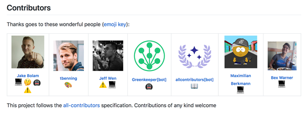
FigureExample contributor acknowledgement example using All Contributors
Recognising the value of software: how libraries can help the adoption of software citation, Neil Philippe Chue Hong, University of Edinburgh, United Kingdom. LIBER 2021 Session #3: Working with Software & Data. https://doi.org/10.5281/zenodo.5036311. Video, start at 57:15 and accompanying slides.
Acknowledgements: Thank you to Julien Colomb 0000-0002-3127-5520, and; Shelley Stall, AGU.
Bibliography
Hunter, Jane, and Hsu Chih-Hsiang . 2015. “Formal Acknowledgement of Citizen Scientists’ Contributions via Dynamic Data Citations.” Digital Libraries: Providing Quality Information, 64–75. https://doi.org/10.1007/978-3-319-27974-9_7.
Katz, D S, N P Chue Hong , T Clark, and August Muench. 2021. “ Recognizing the Value of Software: A Software Citation Guide.” F1000research. https://doi.org/10.12688/f1000research.26932.2.
A pilot infrastructure for libraries to offer easy access for satellite enthusiasts to data from small satellite missions using open technologies and open source software.
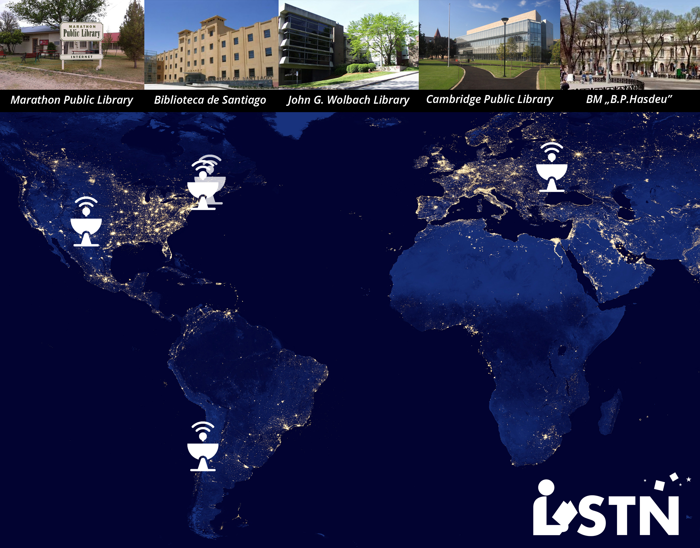
FigureFrom the LSTN Handbook showing the initial five ground station library sites. DOI: 10.5281/zenodo.3776517 | Creative Commons Attribution Share Alike 4.0 International
Nico Carver (ORCID iD: 0000-0002-8152-0440), John G. Wolbach Library, Harvard University.
The John G. Wolbach Library, in collaboration with the Libre Space Foundation (LSF), is piloting an initiative called the Library Space Technology Network (LSTN) to reach satellite novices and engage the public with space-based science (Figure 1). The goal of LSTN is to create novel educational opportunities and hands-on learning experiences with open satellite technology in public libraries. For the past two years, the LSTN team has been developing an affordable satellite ground station kit that public library communities can build, install, and operate. This will allow these public libraries to have the necessary open infrastructure to receive and interpret data from dozens of small satellite missions directly. Small satellite missions rely on ground station networks to track and monitor the health of their satellites. All LSTN ground stations are connected to SatNOGS, a global network of open ground stations.
Society is at a turning point where space technology is at risk of being increasingly closed off as corporations begin selling access to space through their proprietary tools. SatNOGs, conversely, is building an open community dedicated to developing a network of connected ground stations that uses only open technologies and open source software. Their database of satellites, ground stations, and observations (the data received from satellites by ground stations) is built from the ground-up by interested volunteers, and now libraries can get involved too by building, installing, and operating a LSTN kit (Figure 2).
To get started with LSTN, libraries can purchase the necessary parts for the LSTN kit off-the-shelf for well under $1,000 USD. On the LSTN website, you can find a detailed list of the parts, as well as their function and location within the kit. Once all parts are received, librarians or community members can use the LSTN Handbook(Bouquin and Frey 2020) for step-by-step instructions to assemble, install, test, and troubleshoot the ground station. The LSTN Handbook was developed over the course of the LSTN pilot as a one-stop resource for working with the LSTN kit, and is available free of charge under a Creative Commons license on Zenodo. The handbook is an evolving reference guide; improvements and additions will be continually added, and updated versions will always be available at: 10.5281/zenodo.3776517.
After a library has secured all the parts and has reviewed the LSTN Handbook, the LSTN team suggests identifying a small group of library users interested in leading a ‘community build’ of the kit. This would allow the library community to see, hold, and understand the technology involved in a satellite ground station before it is installed on the library roof (where it becomes less accessible). After the ground station is installed and operational, a new phase of educational opportunities begins. The LSTN team has begun working on activities like decoding a Morse code message received directly from a satellite passing overhead.
Next steps
Now that the pilot has proven the technical feasibility of building, installing, and operating LSTN kits at public libraries, the next stage of the project is to develop educational activities with the help of libraries and librarians. The core team has begun developing some introductory materials, but are on the lookout for new ideas that will allow library communities to connect what they are learning about satellite communication and satellite data to their lives and existing data skills.
Infobox: What’s in the LSTN kit?
Antenna: The antenna picks up radio waves from the satellites and passes them on as electrical current.
Cables: Similar to the cables used for cable television. These cables transmit the signal from the antenna to the radio.
Radio: A radio receives radio waves through the antenna and converts them into a usable form. The radio for the LSTN kit is a software-defined radio (SDR).
Computer and software: The computer and software controls the whole station, and communicates with the larger SatNOGS network.
Low Noise Amplifier (LNA): This is put between the antenna and the radio and amplifies the relatively weak signal from the satellite.
Power and internet connection: The computer needs power. The computer also needs to be connected to the internet.
Supports: Since ground stations are usually located on rooftops, they need to be safely attached.
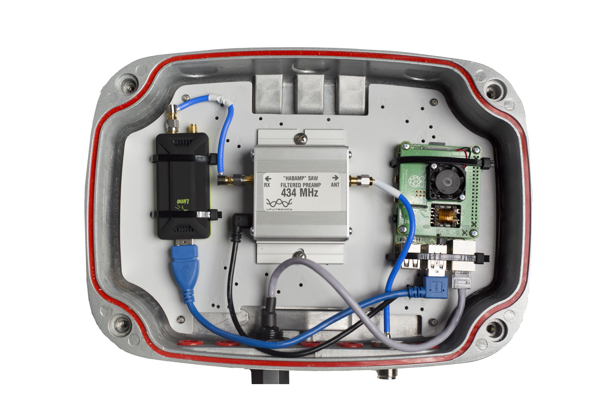
Figure View of interior of ground station transceiver. Source: LSTN Handbook
A crowdsourcing project are often core components of citizen science projects and can create joy, inspire curiosity, foster new understanding, encourage wider social connections, promote learning, and help people cultivate new skills and expertise. To help illustrate the possibilities, we have collated an overview of key concepts, including types of crowdsourcing projects, and some of the complexities you will encounter. Ridge, Ferriter and Blickhan defined crowdsourcing in cultural heritage as “a form of digitally-enabled participation that promises deeper, more engaged relationships with the public via meaningful tasks with cultural heritage collections,” and said that, “at its best, digitally-enabled participation creates meaningful opportunities for the public to experience collections while undertaking a range of tasks that make those collections more easily discoverable by others.”
Any account of this large and growing field is necessarily broad. It encompasses a wide range of human knowledge and understanding. To reflect that diversity, we strive to be capacious in our definitions, discussion, and examples, although we have largely left aside the kinds of crowdsourcing projects in the sciences and for-profit sectors. We expand the discussions in the full book (linked above) when possible with case studies and examples to diversify, complicate, or add extra nuances to the larger narratives in this book.
Each crowdsourcing project is driven by a larger purpose. Those purposes can be as diverse as the people who build crowdsourcing projects. We might start with a research question, for example, as when the Zooniverse crowdsourcing platform began with a single project asking people to help classify distant galaxies. Along with collectively driven inquiries, many crowdsourcing projects seek to expand access to a given collection by enlisting people’s help with transcribing, tagging, or other tasks. Converting scans into searchable text alone can make items in large collections much easier to find for specialists and casual visitors alike. Crowdsourcing can open up new possibilities for research that could not have existed otherwise, fundamentally changing authoritative practices, definitions, and classifications.
Sometimes, when we talk about a crowdsourcing endeavor, colleagues or friends might ask “aren’t you just asking for free labour?” That is a common enough question, usually coming from people who have not had a chance to appreciate the sense of shared purpose and community that a crowdsourcing project can inspire.
Crowdsourcing projects can be a lot more than just augmenting a digitized collection of materials. While plenty of sites invite users to contribute content, crowdsourcing sites differ in that there may be even greater value to be had in undertaking the task, rather than restricting value to the content produced. The process of starting and running a project can present the opportunity to invite people to contribute to the store of knowledge flowing through your organization or institution. Seeing crowdsourcing projects as more than the sum of their tasks or end products allows us to imagine new horizons for our institutions, organizations, and affiliated communities. At its best, crowdsourcing increases public access to cultural heritage collections while inviting the public to engage deeply with these materials.
Clear commitments to certain values can help create spaces for more diverse voices. The British Library’s In the Spotlight project sought to offer spaces for engagement. The Colored Conventions Project’s principles invite people to reflect critically while browsing the recovered histories of Black lives and culture. Others, such as Zooniverse, ask project creators to agree to provide open access to the results of their crowdsourcing projects.
What is unique about cultural heritage crowdsourcing?
Factors that make cultural heritage crowdsourcing projects different from other forms of crowdsourcing include the purposes behind their creation, motivations for participation, project content and data output, as well as theories of cultural heritage crowdsourcing. Many of these topics will be illustrated with examples in other chapters.
Infobox: Overview of crowdsourcing project types
Crowdsourcing projects can be categorized in different ways. Other chapters of the book examine task types in greater detail.
One approach is to focus on the activities performed by the contributors and look at the type of tasks performed. Other options include starting from the type of data processed (e.g., text vs images), size of the project (small, volunteer-led project vs large, institution-supported initiative), or the aim of the project (improve the accessibility of collections, generate or process research data, re-balance focus of collections). Even though it may be difficult to classify projects by type of task alone, it can nevertheless be useful to consider the main data-centered processes employed in crowdsourcing projects. Common examples include:
Correcting/improving digital material — for example, proofreading texts that have been manually or automatically transcribed (OCR), or cropping pictures to remove blank margins, e.g., the New York Public Library’s Building Inspector.
Improving the discoverability of material — for example by transcribing handwritten text or adding or enhancing information about the material by adding or correcting metadata, e.g., the Adler Planetarium’s Tag Along with Adler.
Finding information about a source — for example, identifying an object in a picture, classifying a text, finding a proper name, e.g. The Conway Library’s World Architecture Unlocked.
Generating data/material/collection — for example, by creating new material or collecting and bringing together existing resources, e.g., Wikipedia or The Great War Archive.
What all the above processes have in common is that they rely heavily on the abilities of humans to identify and process information, for example, to quickly identify items in a picture, or read and understand the content of a text.
Designing cultural heritage crowdsourcing projects
Existing tools
Existing tools are a great option if you are new to crowdsourcing, or if you do not have the time or resources to create a bespoke solution. They are less expensive (and often free to use), allow you to build on the experience of others, and can be fairly quick to set up. Participant communities and guided tutorials are often a great way to explore these resources before committing to a single one.
The trade-off of using existing tools is that you may need to adapt your objectives based on the features that the tools offer, as the options for customizable features may vary. Additionally, you will need to consider what other tools you plan to use, as interoperability may be an issue as well.
Case study: explore crowdsourcing with the Zooniverse Project Builder
Zooniverse is a crowdsourcing platform that hosts a large number of projects and includes an existing community of more than 2.2 million participants. Through our open-source, browser-based Project Builder, undefined anyone can design and run their own crowdsourcing project for free. Tools such as the Project Builder can be a useful way for you and your team to quickly set up a test project to explore workflows and task design options in a low-risk environment.
Bespoke tools
If your project requires specific features that are not available in an existing tool, your team may consider creating (or hiring someone to create) bespoke tools. The benefit of bespoke tool creation is that you can get exactly what you want for your project. However, this process is often prohibitively expensive and difficult to sustain. It is important to weigh your options and consider just how necessary your desired custom features may be.
Case study: Building custom projects with the Zooniverse platform
The Zooniverse platform also supports custom project and tool development in cases where the Project Builder toolkit is not sufficient for a project’s needs. In these cases, our team will work with external partners to apply for grant funding to support the custom development effort in conjunction with larger project goals undefined. For example, in 2020, the British Library joined The National Archives (UK), the Royal Botanic Garden Edinburgh, and the Royal Museums Greenwich to apply for funding from the Arts and Humanities Research Council (AHRC) to support the creation of a new indexing tool that will allow participants to choose what items they want to work on within a project. This work is being carried out as part of the larger Engaging Crowds: Citizen research and heritage data at scale research effort, one of eight foundational projects in the AHRC’s “Towards a National Collection: Opening UK Heritage to the World” program.
Customized tools
As the range and availability of existing tools grow, the chance of finding the right tool for your project also increases. However, it can often be the case that an existing tool is not quite right, perhaps lacking a particular feature, but is otherwise perfectly fine. When that is the case, you might consider customizing an existing tool to meet your requirements. For some tools, this is the main way it is developed and supported. See, for example, the open-source tool Omeka, where users and developers help to enhance the tool and support the user community.
Case study: Tool customization at the Newberry Library
Newberry Transcribe is an ongoing project to transcribe diaries, letters, and journals. They are attempting to serve two user groups: transcribers, who need to find (and transcribe) new documents, and researchers who are interested in searching and referencing documents that have already been transcribed. No tool supported both of these approaches, so they customized. They used a custom front end (written in Node.js & React) over Omeka and its Scripto plugin, which itself uses MediaWiki to store its transcription data. It pulls from the Omeka API to filter and sort the items and use the MediaWiki API to power the search of the transcribed text.
Many aspects of planning and designing a crowdsourcing project are similar to what you would find in other projects. You need to define your goals and objectives, identify and mitigate risks, and acquire and manage resources. You have to plan and make decisions about the choice of technology, data, communication, testing, evaluation and much more. Here we have focused on showing how this can be done in the context of cultural heritage crowdsourcing.
Ridge, Mia, Samantha Blickhan, Meghan Ferriter, Austin Mast, Ben Brumfield, Brendon Wilkins, Daria Cybulska, et al. 2021. The Collective Wisdom Handbook: Perspectives on Crowdsourcing in Cultural Heritage. https://doi.org/10.21428/a5d7554f.1b80974b.
{kind=link}
{kind=link}